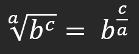
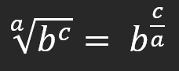
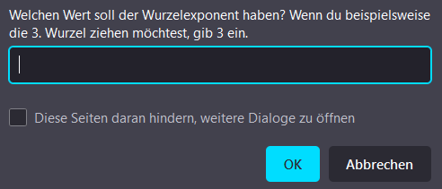
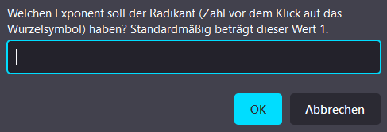

Der Taschenrechner wurde zwar so entwickelt, dass er einfach zu bedienen ist, jedoch gibt
es einige Hinweise, die man beachten sollte. Die nachfolgende Übersicht solltest du dir einmal durchlesen.
 Was muss man beim Schreiben der einzelnen
Rechenzeichen beachten?
Was muss man beim Schreiben der einzelnen
Rechenzeichen beachten?
Folgende Zeichen lassen sich auch auf den Buttons finden:
Wurzeln müssen als Potenz geschrieben werden. Hier müssen jedoch einige Regeln beachtet werden, welche du in einem eigenen Abschnitt findest.
- Verwende für Multiplikation einen Stern (*)
- Verwende für Division einen Schrägstrich (/)
- Für Potenzen verwendest du einen Zirkumflex (^) oder. Dabei schreibt man erst die Basis, dann die beiden Sterne und dann den Exponent.
Wurzeln müssen als Potenz geschrieben werden. Hier müssen jedoch einige Regeln beachtet werden, welche du in einem eigenen Abschnitt findest.
 Hinweise zum Schreiben von Wurzeln
Hinweise zum Schreiben von Wurzeln
1) Die Darstellung als Potenz geschieht folgendermaßen:

Im Taschenrechner gibt man dann folgendes ein: b ^ (c / a)
Bei Quadratwurzeln ist immer a = 2 und c = 1
2) Anstatt dieser komplizierten Schreibweise kann man einfach den Wurzel-Button nutzen. Die Erstellung der Wurzel erfolgt über verschiedene Dialoge:

Im Taschenrechner gibt man dann folgendes ein: b ^ (c / a)
Bei Quadratwurzeln ist immer a = 2 und c = 1
2) Anstatt dieser komplizierten Schreibweise kann man einfach den Wurzel-Button nutzen. Die Erstellung der Wurzel erfolgt über verschiedene Dialoge:
- Man gibt die Basis ein, also die Zahl, von welcher die Wurzel gezogen werden soll
- Man klickt auf das Wurzel-Zeichen
- In das erste Eingabefeld gibt man ein, wie groß a sein soll, also der Wurzelexponent. Bei
Quadratwurzeln ist a = 2.
 - Nun muss man c eingeben. Das ist der Exponent des Radikanten (Zahl, von der eine Wurzel gezogen
werden soll) Standardmäßig ist c = 1. Ist c = 0, so ist die ganze Wurzel = 1. Einen anderen Wert für
c einzugeben, kann bei komplexeren Rechnungen hilfreich sein.
 - Im Eingabefeld sieht man nun den exakten Rechenbefehl ausgeschrieben. Man kann diesen nun kontrollieren, abändern oder weitere Befehle ergänzen.
Wie muss man Kommas schreiben?
Du kannst Kommas sowohl mit dem Punkt (.) als auch dem Komma (,) schreiben. Es ändert
sich nichts an der Funktionsweise des Rechners.
Im Ergebnis wird jedoch immer ein Komma angezeigt und auch wenn man mit der Maus den Button anklickt, wird ein Komma verwendet.
Im Ergebnis wird jedoch immer ein Komma angezeigt und auch wenn man mit der Maus den Button anklickt, wird ein Komma verwendet.